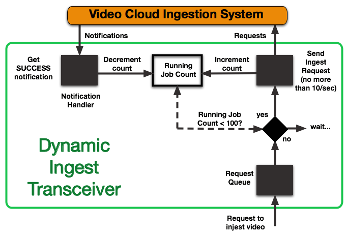

Fallback / Retry Strategy
Dynamic Ingest imposes rate-limiting (per account) in two ways:
- No more than 20 requests (CMS API and/or Ingest API requests) per minute are allowed
- No more than 100 concurrent jobs are allowed
The first is not difficult to manage in your app - you can just impose a delay of 333 milliseconds or more between requests. The second is more complicated, as there is no way to query the system directly to determine how many jobs you have currently processing.
You can simply wait for some period of time and retry requests until they succeed, but you can implement a more rational fallback/retry system by listening for notifications from the Dynamic Ingest system and using the information to keep track of jobs in-flight yourself.
One way to implement this would be to build a transceiver app that both submits the ingest requests and listen for notifications. The diagram below shows the high-level logic of such an app.

Sample App
You can find the source for a sample Node-Express app in this Github repo